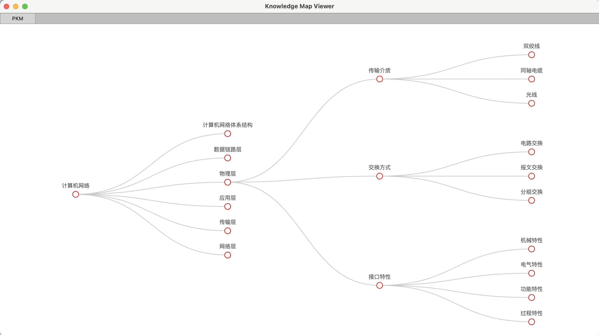

PKM - Personal Knowledge Map

独立思考能力是科学研究和创造发明的一项必备才能。在历史上任何一个较重要的科学上的创造和发明，都是和创造发明者的独立地深入地看问题的方法分不开的。——华罗庚
https://charlesshan-hub.github.io/PKM
项目介绍
PKM(Personal Knowledge Map)，个人知识地图致力于在构建知识树的基础上加入其他要素，使之成为具有可发展性，强关联性的新型知识树。
个人知识地图关注于：构建某学科的全面的知识树；将不同学科知识树进行关联与整合；将基于Xmind的知识图提炼出知识数据关系。 目前阶段专注于构建单独学科的内在知识导图。
内容地图
| 计算机科学 | ||
|---|---|---|
| 计算机组成原理 | （计算机体系结构） | （计算机体系结构进阶） |
| 操作系统 | 数据结构 | （算法设计与分析） |
| 计算机网络 | (数据库) | |
| (多媒体基础) | （图像与视频处理） | （交互式媒体） |
| （高级变换） | （数字信号处理） | （信息论） |
| （软件工程） | （前端） | （后端） |
| 区块链 | （人工智能） | |
| （Julia） | （Python） | （Java） |
| （C） | （Matlab） | （Javascript） |
| 数学 | ||
| 高等数学 | 线性代数 | 概率论与数理统计 |
| 文史哲 | ||
| （西方哲学史） | （中国哲学史） | 马克思主义原理 |
| 毛泽东思想 | 中国特色社会主义理论体系概论 | 近代史纲要 |
| 思想道德修养 | (英语) | |
| 经济与管理 | ||
| (宏观经济学) | （微观经济学） | |
| （企业管理） | （产品开发） | （企业战略管理） |
| 艺术设计 | ||
项目逻辑
利用Xmind搭建内部富有关联的知识地图 -> learn.xmind

利用PKMViewer中的工具，将思维导图中的数据提炼出来，进行处理，生成HTML展示。

可以通过Nginx搭建属于自己的知识展示网站

可以将数据提炼为关系，插入到Neoj4知识图谱中。

想挖的坑
- 计算机网络 $\to$编码工具CRC，海明码等可视化
- 项目要求：基于JS，生成动态的可视化看板，可以进行数据交互。需要做到简单易用，一个浏览器就能运行。
- 计算机组成原理$\to$原码反码补码转换可视化工具
- 数据结构$\to$可拓展数据结构组件（C++）
- 数据结构$\to$AVL(二叉平衡树)流畅美观动画展示
- 项目要求：AVL左旋右旋动画-提起父节点，高度超过爷节点，子节点吸到爷节点上。每个节点展现出磁力互斥感。
- 去除所有导图内容中可能存在版权问题的成分，去除可能存在版权问题的资料，将项目分成个人部分与开源部分，公开的资料不含敏感文件。
- 所有导图适配知识图谱导入工具，注重构建知识关联。